A name box that fits
The program's name at the top of the toolbar is shorter, raised like the buttons, and in the theme's own colours.
Coda for the Psion netBook
The netBook shipped in 1999 with software that was never quite done. Coda is a new edition of its operating system, by Dan Edge.
Install See what's new Why it needed doing
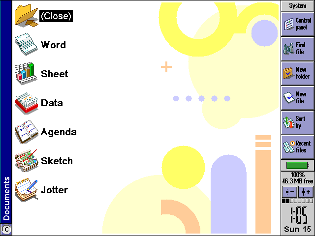
Every picture on this page is a real screenshot, straight from the screen.
More memory free from the start, a toolbar that tells you when it runs low, programs that give memory back, and an alarm screen of its own.
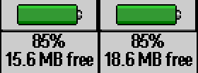
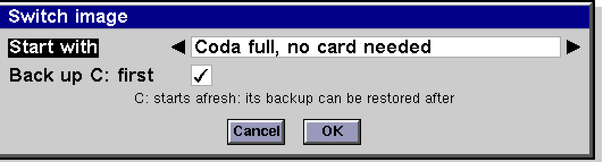
More free memoryTwo Coda images on the card. The small one keeps what you don't use all the time on the card, for about 19.9 MB free at the System screen instead of 15.6 MB. PsiBoot's Switch image picks it, Coda full with no card needed, or Psion's own.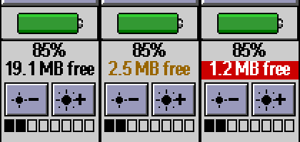
The free memory lineAmber when low, red when very low. Tap it for Free memory. PsiLinux sleepsBehind other programs, its memory goes to the card.
PsiLinux sleepsBehind other programs, its memory goes to the card.
Updated 18 November 2026. Read the diary entry
Every feature on the netBook today, grouped as this page is. Each one links to its part of the page.
The netBook is a clamshell with a 640 by 480 colour screen, a 190 MHz StrongARM and a CompactFlash slot. Its software, EPOC, was written for the Series 5: half the height and 16 greys. A lot of it came across as it was.
You notice. Programs draw a half height layout in the middle of the screen. Icons are grey or dithered. Time's map is bright green on navy. None of it stops the machine working. Together it feels half done. Coda goes through it all, one piece at a time, and adds what a netBook should have had.
Colour where Psion left grey, type you can read, and a toolbar that tells you what you need.
Themes
Pick a theme in the Control panel and watch a preview before you commit. The toolbar, the Documents bar, the wallpaper and both clocks follow along. Every colour comes from the screen's steady palette, so nothing shimmers.
 CodaDark
CodaDark
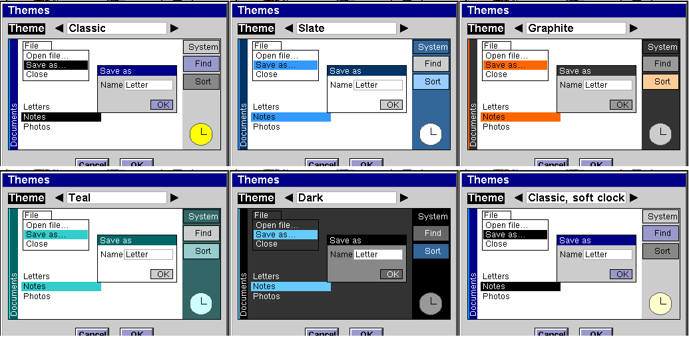
The program's name at the top of the toolbar is shorter, raised like the buttons, and in the theme's own colours.

The strip down the left of the System screen is painted in the theme. It used to stay navy whatever you chose.
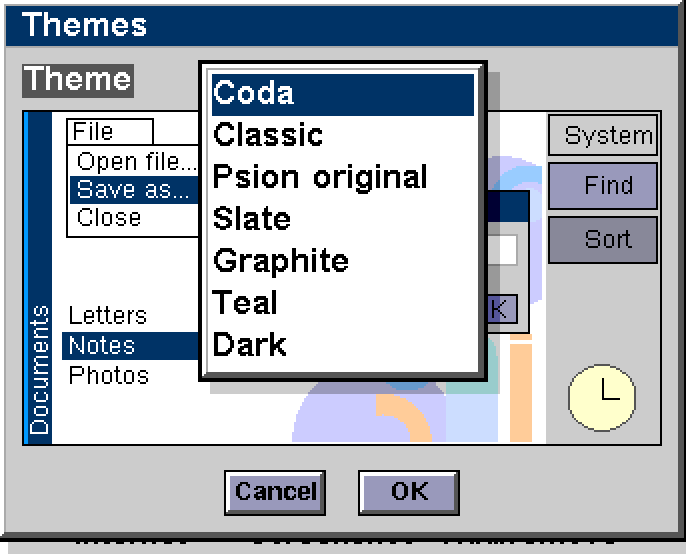
Psion asked for button colours the palette didn't have. Coda tunes the screen so Classic shows the blue greys Psion meant.

 PsionCoda
PsionCoda
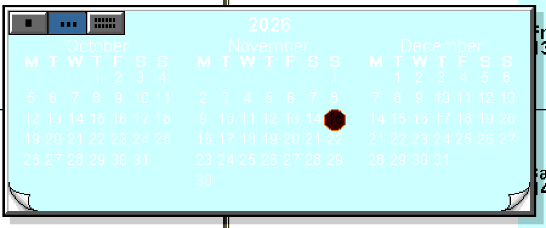
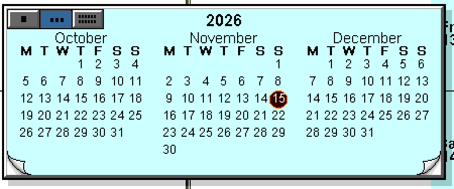
BeforeCodaWallpapers
Five new wallpapers: Coda, Coda psi, Coda hills, Coda sweep and Coda shapes. Each is big flat shapes in the theme's own colours, kept clear of your files, and repainted the moment you change theme. Psion's logo is still there as Psion EPOC.
Chosen the usual way, in the System screen's Preferences, and shown in every folder and on every disk, not only in Documents.
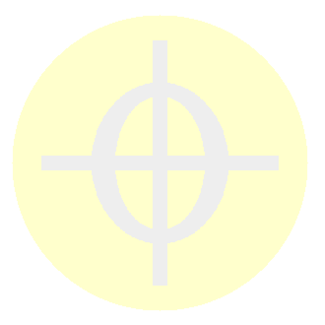
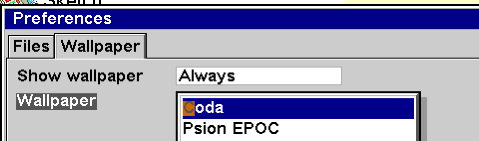

The toolbar
Battery percentage, free memory and a brightness control, on every program's toolbar, or the widgets you choose in their place. Tap the cells or drag along them to set the backlight.
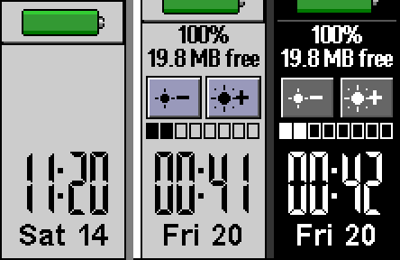
The charge comes from a model of the netBook's pack, not a raw voltage, so it doesn't jump when the backlight comes on and it says when the pack is full. Type "battery" in PsiHub for the time left and the backup battery.
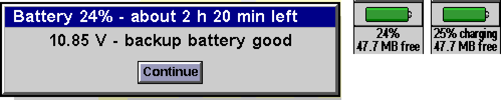

Above the clock goes a stack of up to six widgets, top first: the battery's charge or time left, free memory, free space on C: or D:, the date, the week number, the moon's phase, the next alarm, and brightness or contrast controls. Every program's toolbar shows the same stack.
What a tap does is yours to choose too: nothing, the widget's own action, or a program you pick. Tap the date and Agenda opens. Tap the next alarm and Time does.
The toolbar's clock can have up to six faces, in the order you choose: analogue, digital, this month's calendar, the moon, sunrise and sunset, the date in large figures, or a widget drawn large. Tap the clock for the next face, and every program shows the same one. Choose no faces and the clock is off, and the widgets have its room.
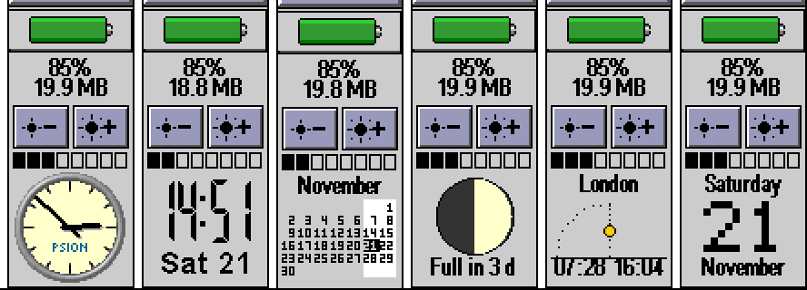
Psion's toolbar clock was bright yellow, with a name printed on it nobody could make out. Both faces are redrawn with solid greys, a lit bezel and hour marks that sit on whole pixels. Coda gives it a pale cream face. Classic keeps the yellow. The digital face is in the theme's colours too.


 PsionCoda
PsionCoda

Control panel, Toolbar has three pages: Widgets, Taps and Clock. If the widgets you pick won't fit the room, it says so. Sunrise and sunset are for the home city set in Time.
Change the brightness or contrast from the keyboard and a panel shows the new level over whatever is on the screen, in the theme's colours, for a moment and a half.
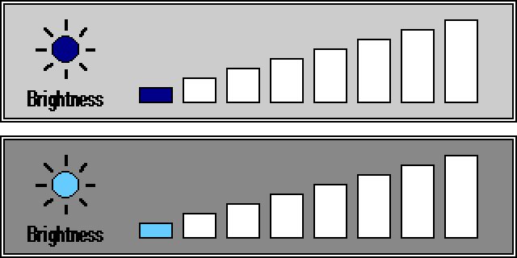
The free memory line changes colour as memory runs down: amber under 3 MB, white on red under 1.5 MB. Tap it, at any level, for the Free memory dialog. It lists what you can do, biggest first: close a program, which saves first, put a program to sleep, or move the biggest files in Documents to the card. Press Free and it says how much came back.
Under 750 KB the dialog comes up by itself, once. Untick "Tell me when memory is low" and it doesn't.
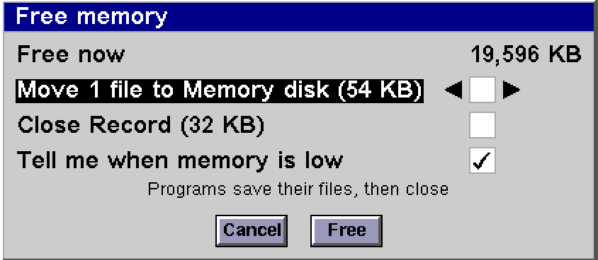
Text and fonts
Control panel, Text offers Psion's own font, Inter, Noto Sans and DejaVu Sans. Each is redrawn at the exact pixel sizes EPOC uses and kept within 4% of Psion's widths, so every menu and dialog still fits. Psion's font can be smoothed, in a few styles.

Inter, Noto Serif and DejaVu Sans Mono sit beside Psion's Arial, Times New Roman and Courier, in regular, bold and italic, drawn for the netBook's screen at every size Word uses. Six more can go on the card. Office files asking for Calibri, Cambria or Consolas open in the nearest face.
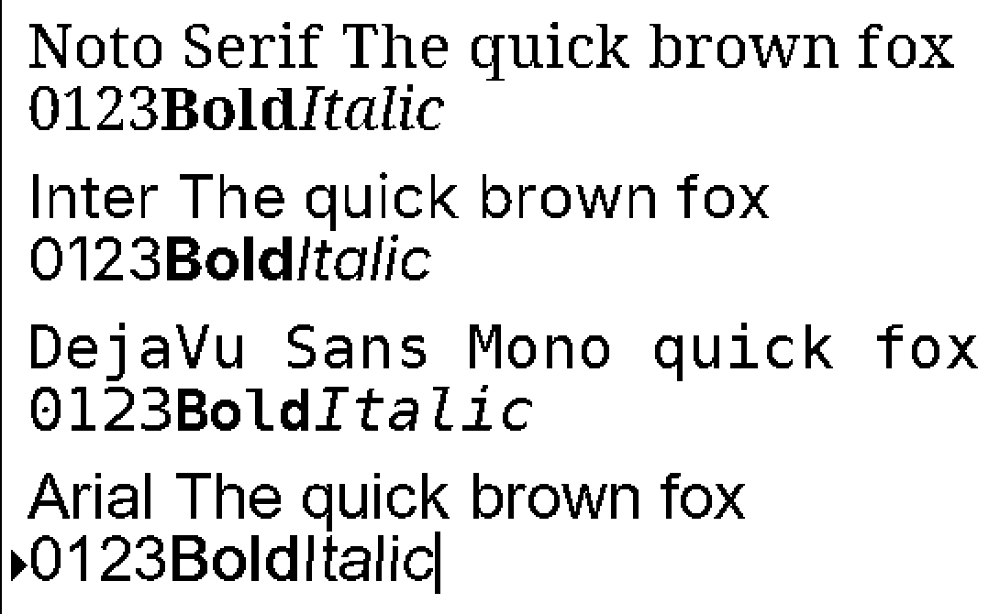

Pictures and icons
The netBook's pictures came over from the Series 5: grey, dithered, sometimes blurry. Coda cleans up 80 of them, redraws the clock faces, and offers new high resolution icons in the Control panel. Psion's stay the default.
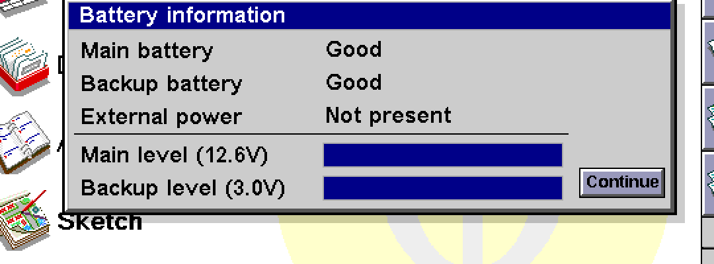
Psion's programs, refreshed
Every built in program was checked for the places where the jump from the Series 5 shows. Pick one and drag.

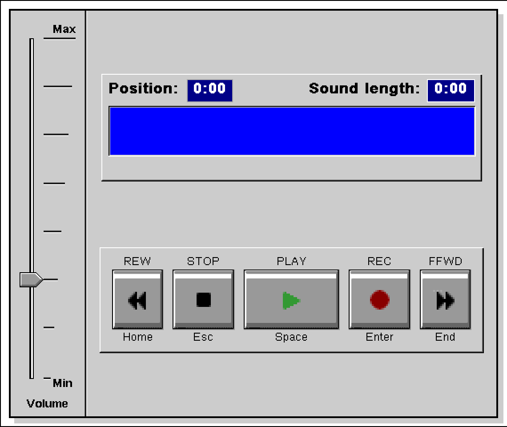
PsionCodaPsiHub
A launcher over whatever you're doing. Open programs come first, most recent at the top. Start typing and it searches programs, settings, files, Agenda and commands at once, and learns what you use. It knows other words for things, so wifi finds the network settings, and it forgives a letter typed wrong.

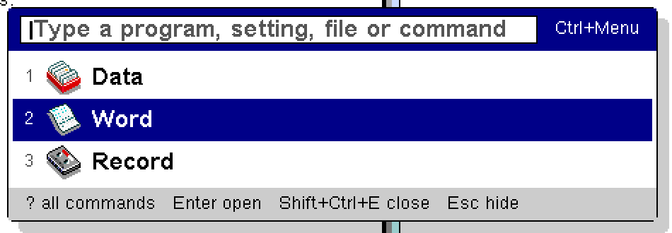
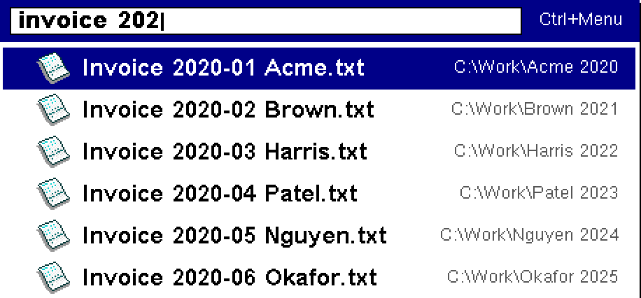

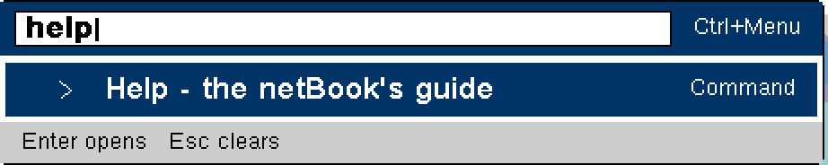
Fn+Shift+Enter on a file, on the System screen or in PsiHub, asks which program to open it in. Tick Remember and that program comes first next time for that type of file. Enter still opens the usual one.
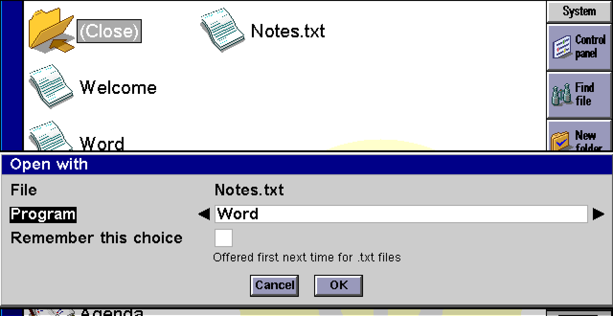
PsiFiles
Tab on the System screen opened a folder browser sized for the Series 5. Now Tab opens PsiFiles at the folder you're in, and Ctrl+Q at a page of your disks. A tree on the left, your files on the right, with each program's icon, size, date and type.

 PsionPsiFiles
PsionPsiFiles
Each copy is written under another name, read back and checked, and only then given its name. A full disk or a card pulled out never leaves half a file. If the name is already there, you choose: Replace, Keep both or Skip.
Delete goes to a Trash, and Ctrl+Z undoes the last rename, move, copy or delete. Copies queue up behind each other, so you can keep working.

Details, Compact or Pictures, with thumbnails of your photos. Space shows a preview. Draw the pen down the list to mark several files. Favourite folders sit at the top of the tree. Find, Properties, cut, copy and paste are all there. Hidden files and folders are always shown.
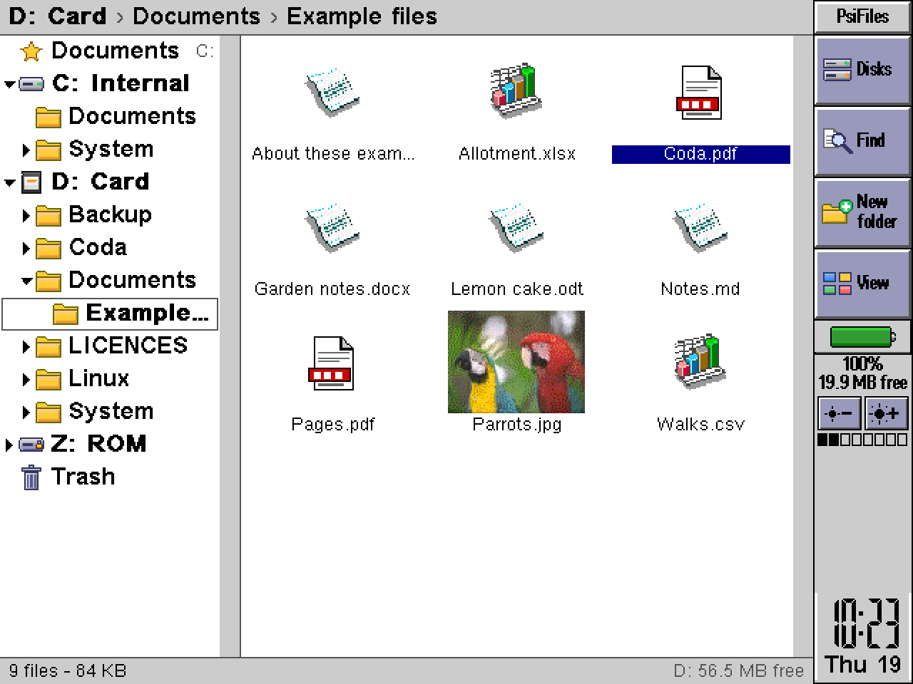

Clips
EPOC keeps one thing on the clipboard. Clips keeps the last twenty, or ten, or fifty. Press Ctrl+Fn+V in any program, pick one and press Enter, and it goes in at the cursor.
Saved texts are for the lines you type again and again. Put %date% or %time% in one and it's filled in when you paste. The idea came from the Psion community's own add-ons, written again for Coda.
Office files
Word and Sheet open and save Microsoft's formats and others on the netBook itself. It's built into the ROM. No PC needed.
Tap a .docx or .xlsx on the System screen and it opens straight in Word or Sheet. The formats are there in Save as, too. Pictures in a document come in as Sketch objects.

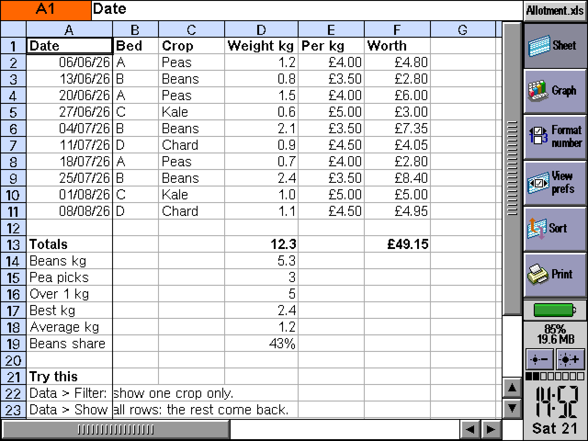
A Markdown file opens in Word formatted: headings, bold and italic, lists, quotes, code and tables. Save it and it goes back as clean Markdown. View, Markdown source (Shift+Ctrl+X) shows the plain text with its marks.
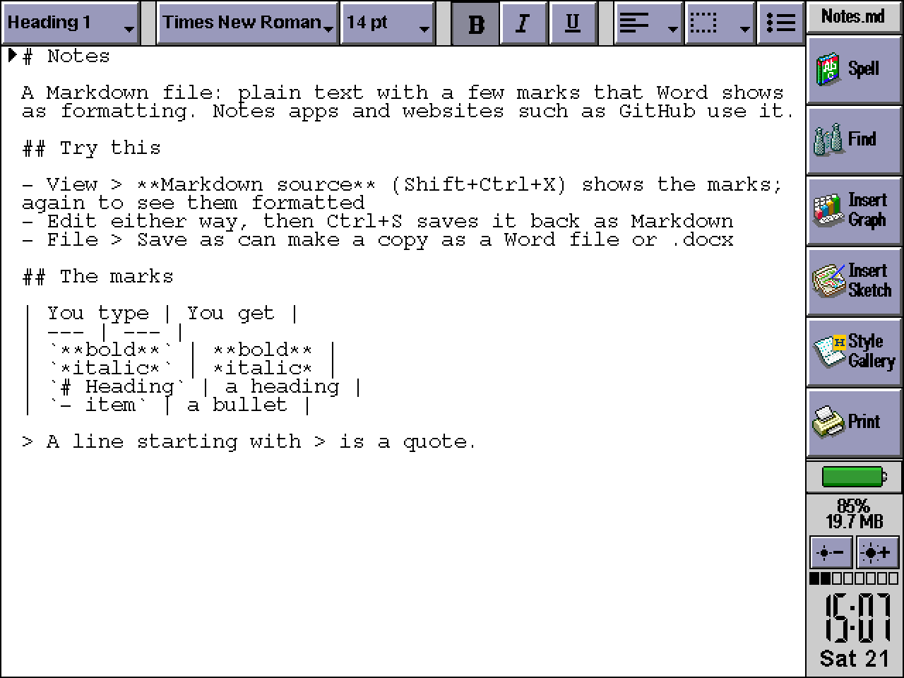
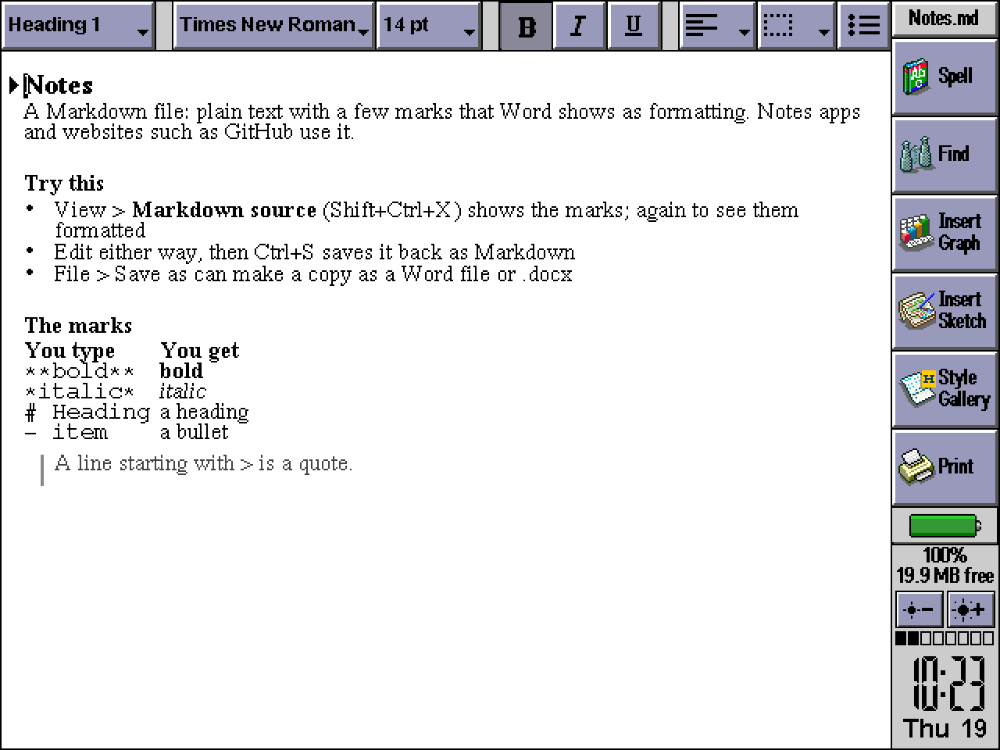
SourceFormattedA new Data menu. Fill down with Ctrl+D, fill right, or fill a series of numbers, dates or months. Filter the rows by a column. Summarise one column by another into a new worksheet. SUMIF and COUNTIF in an Excel file come in as working formulas.
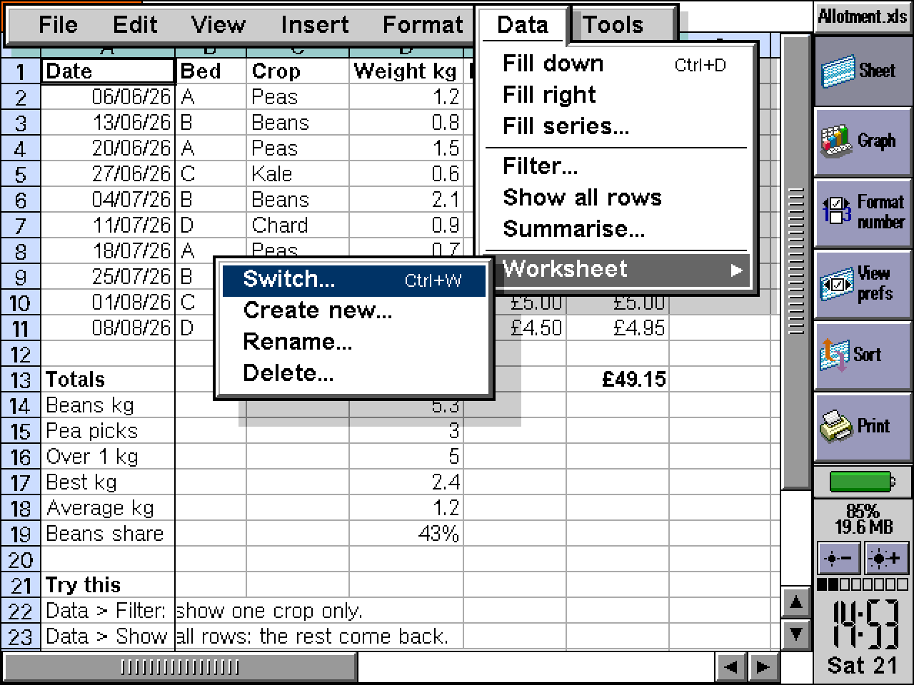
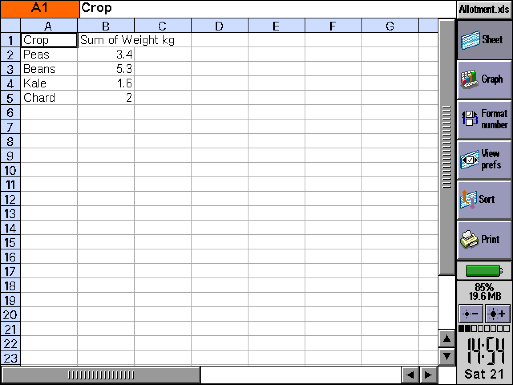
"PDF file" is in every program's printer list, and the PDF is saved next to your file, with real text you can search. On the card, PsiPDF opens a PDF tapped on the System screen, fitted to the width. It zooms, goes to a page, finds text and opens files with a password.
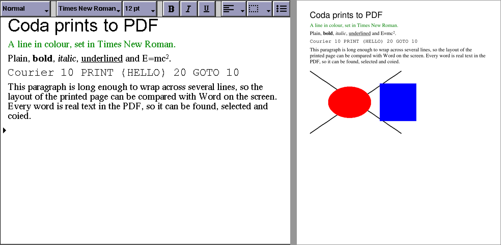
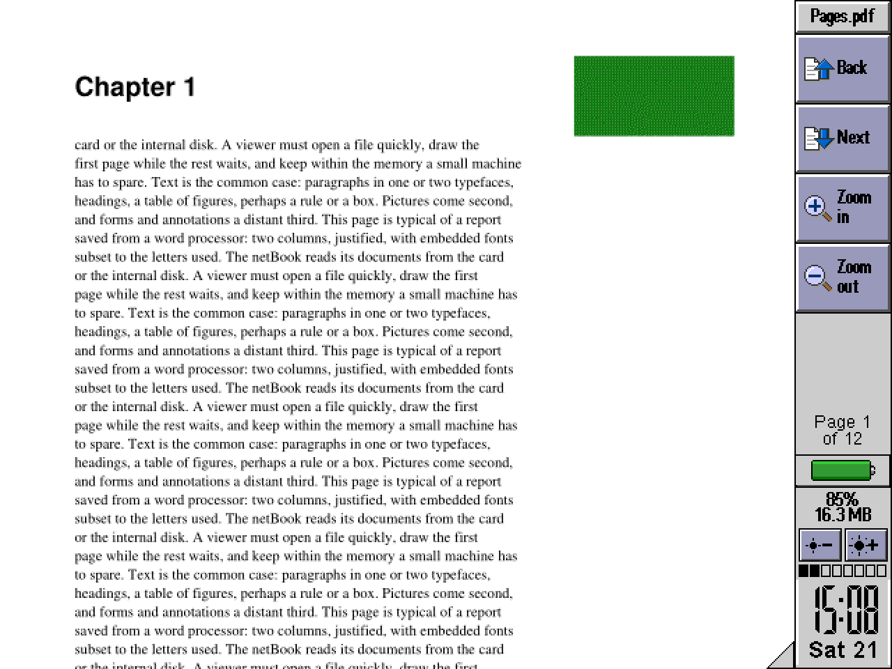
Agenda
Psion's Agenda stays the program you know. Coda gives it the things a diary needs today.

Ctrl+Y and type "lunch with Sam fri 1pm". Repeats, alarms and birthdays work too, and "#work" puts it in your Work calendar. PsiHub can add entries and find them.

Edit, Entry details shows the place, calendar, time zone, attendees and your reply. Give an entry a time zone and it follows that place's summer time and yours.
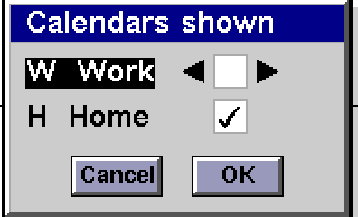
Agenda's entry symbols get names, so W is Work and H is Home, in Agenda's own colours. View, Calendars shown hides one in every view.

Each press of Snooze puts an alarm off for longer: 5 minutes, 15, an hour, a day. Open PsiHub with nothing typed and your next entry is the last row.
Sync
Sync in the Control panel keeps Agenda in step with an online calendar, and Contacts with an online address book. It speaks CalDAV and CardDAV, as most calendar services do. It syncs at the times you set, when a connection comes up, or on Sync now, and never dials on its own unless you let it.


Alarms
An alarm used to ring until somebody cleared it. Time's Preferences now have Ringing and Chime pages beside Psion's own. The idea comes from Alarm+, by Robin Hood.

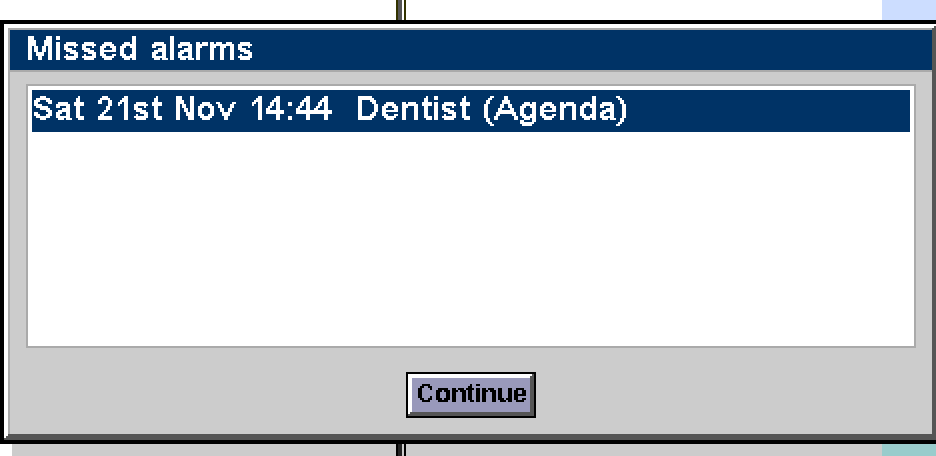
The netBook can switch itself off again after an alarm woke it, and open Agenda after one of its alarms. The chime beeps every 15, 30 or 60 minutes, with quiet hours. Ringing until cancelled is still the standard.
An alarm showed the start-up banner, so it looked like an About box. Now it has its own: a bell and "Alarm" in navy and orange. Psion's photo-style clock on its grey square is gone too. In its place is a white face with a slim navy ring, navy hands, an orange second hand, and the date and time on navy.

New programs
Psion's own programs, rebuilt for the netBook's whole screen, with the same menus, keys and files.
Calc drew the Series 5's calculator in the middle of the screen, like it had come through the letterbox. The new Calc is the same calculator laid out again for 640 by 480: the till roll, the memories, the Scientific view, every key Calc's own raised keycap, drawn larger with crisp edges.

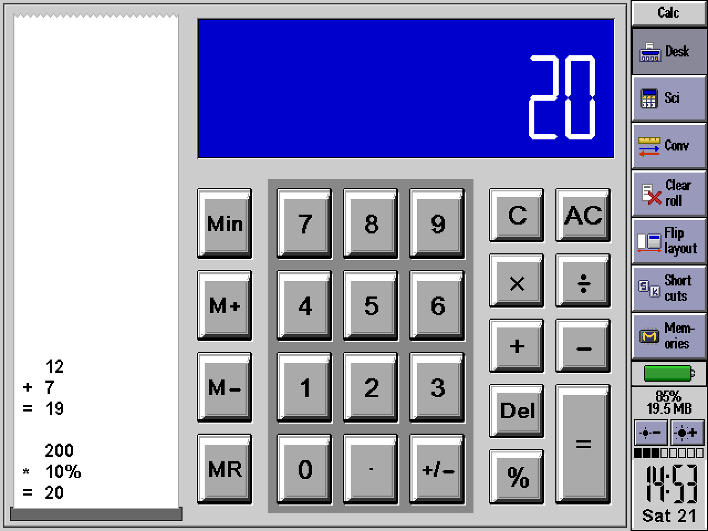
PsionCodaThe screen shows 256 colours. Psion's Sketch let you pick 16. The new Sketch opens all of them, laid out like the colour wheel unrolled, with your recent colours and a picker that takes a colour off your drawing. It uses the whole screen, zooms to eight times, undoes 16 steps and exports to PNG. And it has the one tool Psion's never had: Fill, on Ctrl+G. Redo sits beside Undo, Clipart and Fill have a button each, and a tap outside Insert clipart closes it.

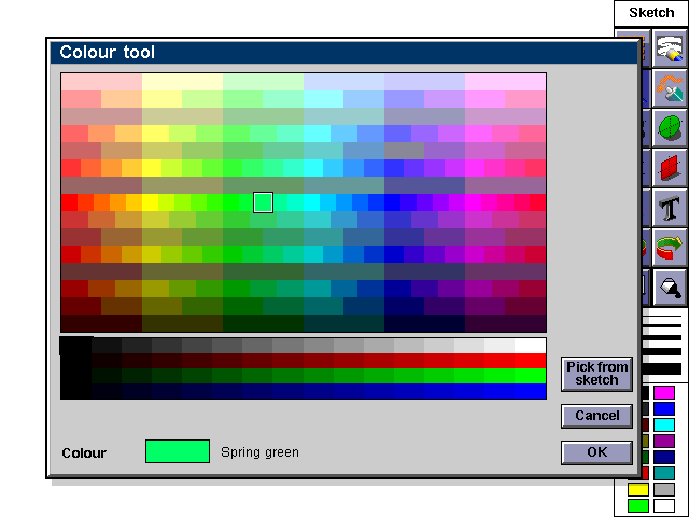
PsionCoda
The sound drawn as a waveform, so you can see the gaps. Select part of it to play, erase or crop to, skip 5 or 30 seconds at a time, and bring WAV files in and out.
 Fixed paletteIts own
Fixed paletteIts own
Tap a PNG, JPEG, GIF or BMP and it opens fitted to the screen, ready to zoom, pan and step through the folder. Each photo gets its own 256 colours.
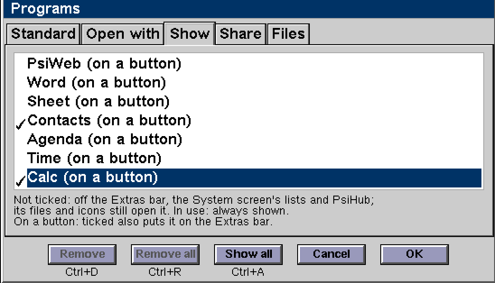
Prefer Psion's originals? Control panel, Programs puts them back on the icons. Its Show page leaves any program you don't use off the Extras bar and PsiHub.
Spelling
Psion's dictionary is from 1995. It had never heard of email, website or broadband. Coda adds about 123,000 British English words, with -ise spellings, beside Psion's own. Spell uses them for suggestions, anagrams and crossword answers too.
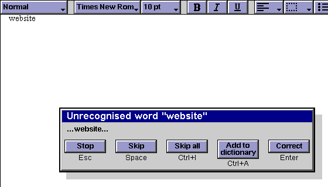
 PsionCoda
PsionCoda
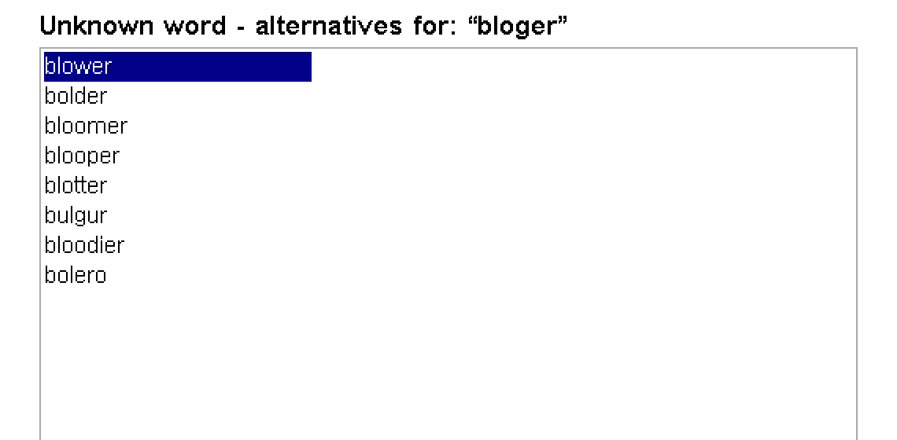
 PsionCoda
PsionCoda
PsiAmp
An MP3 and WAV player in the look of the classic skinned players. Green LED digits, a scrolling title, a visualiser and a playlist, floating over whatever you're doing. Press Esc and it gets out of the way, still playing.
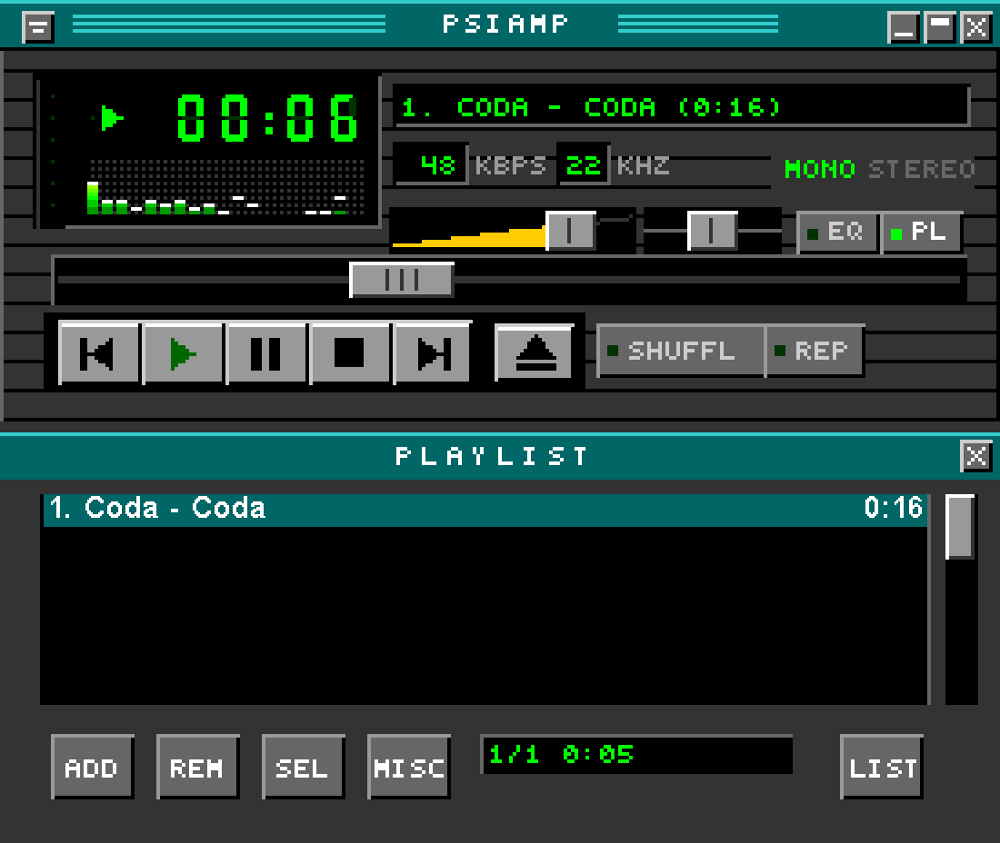


Tap an MP3, a WAV or an .m3u playlist on the System screen and it plays. Add whole folders, shuffle and repeat. Bring your own classic .wsz skins too.
Mail, the web and SSH that work with today's internet, and a real Linux one word away.
Internet and connectivity
Psion's Email, Opera and Comms terminal couldn't cope with the modern internet. Coda replaces them with programs that can, and the toolbar's Email and web icons open them.
All three call the ways a Psion gets online by the same plain names: Direct, on the network card or a dial up; the Atom modem helper; or PsiProxy on a computer. The first time PsiMail or PsiWeb starts, it asks which is yours and sets itself up. Cancel changes nothing.

IMAP and SMTP over TLS, with the server's certificate checked, Gmail's included. On the netBook, in colour, with a preview under the list and today's events under the folders.
PsiMail on GitHub
A browser built on Links 2, in colour across the whole screen. It opens on a speed dial, and a light by the address says how the page came.
PsiWeb on GitHub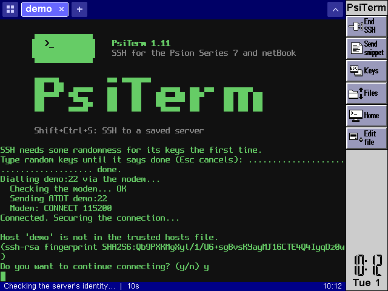
SSH with SFTP and tmux support, in place of a dial up terminal and an FTP client that sent passwords in clear. It names the connection as PsiMail and PsiWeb do.
PsiTerm on GitHub
The clock set from a time server once a day, and summer time switched on the right dates for every city in Time, now on today's time zones.

Psion stopped the serial port at 115,200 bps. The chip can do 230,400. Any program that asks for the old top speed gets double. It's the netBook version of PsiBoost.
PsiWeb
Set up PsiWeb asks how this Psion gets online, where pictures come from and how to search. Going direct, PsiWeb checks each secure site's certificate on the Psion itself, RSA and ECDSA alike, and speaks AES-GCM as well, so sites like eBay open without a helper.
The light by the address says the route, with a padlock once a secure page has been checked. On a netBook going direct, pictures are on as standard.


Type words where the address goes and they're searched for, with DuckDuckGo's page without scripts or FrogFind, no helper needed. Addresses complete from your favourites and history. Cookies can be kept for next time. Big sites such as Wikipedia, Reddit and CNN get a line at the top offering their own lighter edition. A page saves as big as the disk will take.
Highly experimental, and only tested in the emulator. For a page that needs a modern browser, File, Open in full browser hands it to PsiTerm, which runs Carbonyl (Chrome in a terminal) or w3m on a computer you've saved there. So far it has only been tried in the emulator, and only as far as PsiTerm taking the page: it hasn't yet been run end to end on a real netBook.
PsiMail

On the netBook PsiMail uses the whole screen. Manila folders, yellow envelopes for unread mail, red flags. Under the folders, the rest of today's events. Under the preview, its pictures, and Reply, Forward, Archive and Flag for the pen.
With the network card or a dial up connection open, new mail appears at once. Through the Atom modem helper it checks every ten minutes. The box in the title band says the route and who does the encryption, with a light. Tap it for Status information.
Find works offline, through the mail already on this Psion. Up to eight rules move new mail to a folder, flag it or mark it read as it arrives. Replies can have a signature of their own.
New in PsiWeb 0.85 to 0.88 and PsiMail 1.00 to 1.03.
The Linux terminal
PsiLinux runs real, unmodified Alpine Linux 3.24 programs on the netBook. It boots with BusyBox init and OpenRC, or goes straight to bash. Alpine's own apk installs Alpine's signed packages, from a catalogue of about 25,000.

PsiLinux brings its own small kernel layer on top of EPOC, much as WSL1 does on Windows. Linux programs get Linux's system calls, built on the Psion's own files, sockets and memory.
Linux sees the Psion's disks, and its epoc command opens a file in its program, lists the tasks and uses the clipboard. exit closes PsiLinux.
Type term, linux or shell into PsiHub and press Enter. The terminal is PsiTerm's, in colour on the netBook.
Idle, Linux gives its caches back to the Psion. Behind another program with only a shell at its prompt, it goes to sleep: its memory is written to the card and handed back, and Linux carries on where it was when you switch to it. A shell at its prompt holds about 4.7 MB awake and 2 MB asleep. Preferences sets when it sleeps: after 1, 5 or 15 minutes, or never.
ls /psion/c/Documents # Psion's disks under /psion
cd /psion/c/Documents
epoc open "Garden notes.docx" # opens it in Word, as a tap would
epoc run Agenda # starts Agenda, or brings it forward
epoc ps # programs and processes, with memory
epoc close Word # asks Word to save and close
epoc clip get | wc -w # count the words on the Psion's clipboard
epoc note "Backup done" # a message on the Psion's screen
epoc shot # a screenshot, as a PNG
epoc info # machine, Coda's edition, battery, memoryLists come out tab separated, or as JSON, with exit codes for scripts. This one backs up Documents to the card, in a folder named by the date.
#!/bin/sh
to=/psion/d/Backup/$(date +%Y-%m-%d)
mkdir -p "$to" && cp -rp /psion/c/Documents/. "$to"
epoc note "Documents backed up"ls / shows the Psion's disks beside Linux's own folders. X, Links in graphics mode and Doom are optional installs.How Coda starts, what your memory is doing, where its settings live, and why Psion's own image is never more than a step away.
Start up
Control panel, Start-up opens your programs and files after every start, in your order, each in front or in the background. Hold Shift while the netBook starts to skip them once.
On a fresh start, Coda prepares itself in plain view: PC link and key clicks off, Serial speed and Internet time on, the date as 15/11/2026, a 24 hour clock and metric units with miles, as in the UK. Programs Psion started at boot are closed again once they've made their documents, giving back about 1.4 MB of memory. Word and Sheet save your changes every 5 minutes.


Tasks and memory
EPOC's own task list gives each program's name and its document, and nothing more. It can't say how much memory a program holds, or end one that won't close. PsiMemMan, Coda's memory and task manager, lists every program and process with its threads, memory, heap, stacks and priority.


Switch to a program, or close it and it saves first. End one that doesn't answer. The system's own processes are never ended. One command closes every program in the background, and Advanced sets a program's priority.
The Memory view shows what's free, what programs, the Internal disk and the system take, the biggest programs and the disks, with a graph of the last few minutes. It stays up to date as it changes. Free memory gives back the unused heap of every program at once, and nothing closes. Clean up, Open files and System information, with why the netBook last restarted, are a menu away. Type tasks in PsiHub to open it.
A tap on the program's name at the top of the toolbar opens the task list. When memory runs low, the Free memory dialog offers to close programs or put them to sleep, and Coda's own programs hold less to begin with: PsiMail, Sync, PsiPDF and PsiWeb take their big buffers when they need them and give them back after.
Ideas from EPOC Task Manager by Robin Hood.
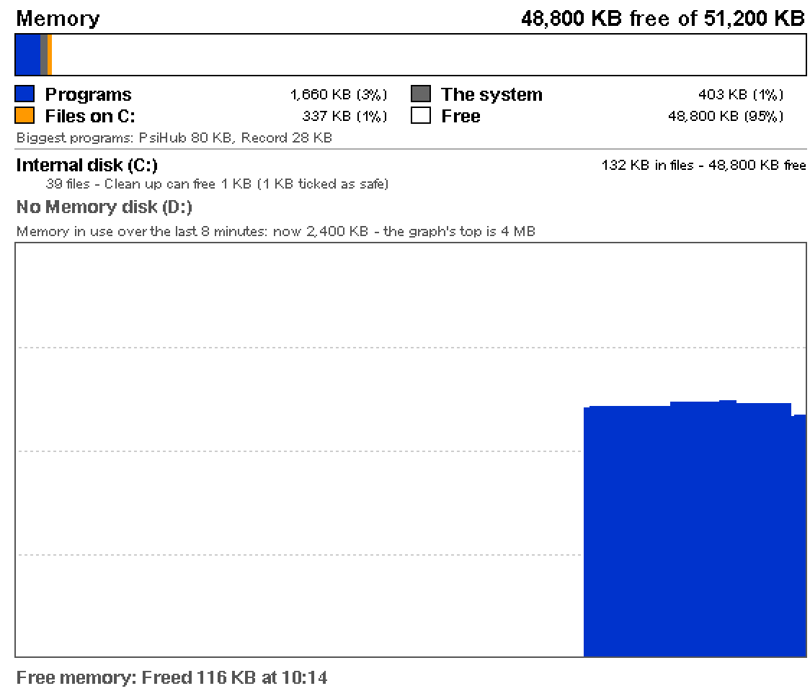
The Control panel
Coda's settings live where Psion's do, grouped by kind: Psion's own, then the network, then the look, then programs.

Safety and switching
The netBook has no flash ROM. At every cold start it copies the whole operating system off the card. So Coda is one file on the card, and Psion's own image sits right next to it.
There are two Coda images on the card. The small one keeps what you don't use all the time on the card as ordinary files: Calc, Sketch and Record, PsiAmp, PsiHub, Help, the typefaces, Smooth text's styles, the Office converters, the spelling dictionary and thesaurus, Sketch's clip art, the alarm sounds, Word's templates and OPL's demos. They cost no memory until you use them, so the System screen starts with about 19.9 MB free instead of 15.6 MB. Coda full keeps everything inside, for a netBook without its card.
PsiBoot's File, Switch image lists the card's images by what they are: Coda, most free memory; Coda full, no card needed; and Psion's own. Before a switch it backs up your C: disk, keeping three dated copies, each read back and checked before the oldest is removed, and afterwards it offers to put it back. A restore keeps the new image's connection settings and copies your dial-up services into them.


Removed and replaced
| Psion's | Coda's |
|---|---|
| PsiMail | |
| Opera, Web | PsiWeb |
| Comms | PsiTerm |
| nFTP | PsiTerm's SFTP |
| Browse dialog | PsiFiles |
| Calc, Sketch, Record | New ones, with Psion's on Extras |
| Word's .doc viewer | Word opens .doc itself |
| Example files | Coda's own, on the card |
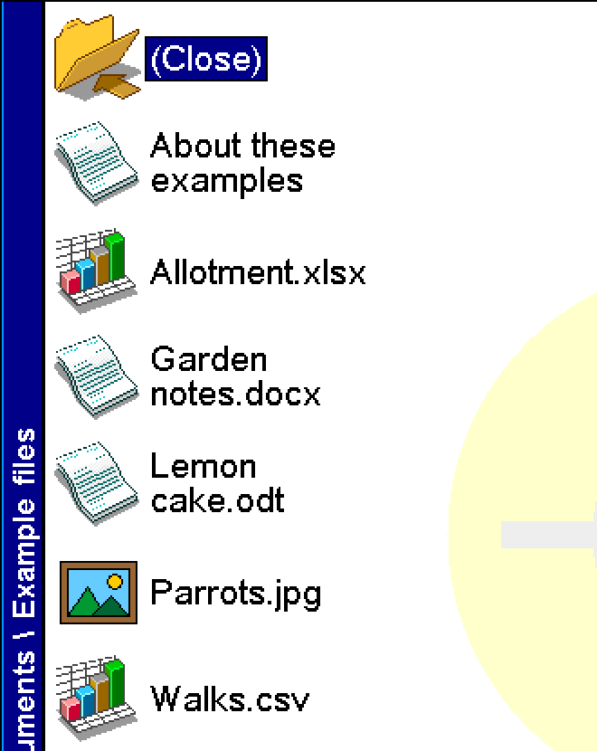
Small touches